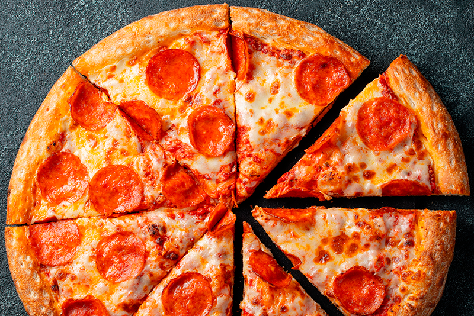

Pizza

Description
Pizza is a dish of Italian origin consisting of a usually round, flat base of leavened wheat-based dough topped with tomatoes, cheese, and often various other ingredients (such as anchovies, mushrooms, onions, olives, pineapple, meat, etc.), which is then baked at a high temperature, traditionally in a wood-fired oven. A small pizza is sometimes called a pizzetta. A person who makes pizza is known as a pizzaiolo.
In Italy, pizza served in a restaurant is presented unsliced, and is eaten with the use of a knife and fork. In casual settings, however, it is cut into wedges to be eaten while held in the hand.
Ingredients
- Ham
- Pepperoni
- Cheese
- Tomatoes
- Pineapple
Steps
- Puree the tomatoes in a food processor or blender. You can also mash them with a fork so there are loose pieces. Add a pinch of salt and oregano to this sauce.
- Grate the mozzarella cheese.
- Chop all the other ingredients: the ham, onion and paprika into strips, and if you use pepperoni or sausage, into very thin slices, although they will surely have already sold it to you that way.
- Assembling the pizza.
- Add the tomato sauce on your previously prepared pizza dough and ready in its respective mold. Spread the sauce well with the help of a spoon so that it is uniform on all sides.
- Then put the grated mozzarella cheese and then the other ingredients.
- Bake in the oven, previously preheated to 200 degrees Celsius.
- Let cook for 10-15 minutes. Be careful not to burn it, as some ovens are treacherous.
- The exact point of the pizza is: the slightly browned, melted cheese on top, and the slightly brown pizza dough on the bottom. It should be able to break easily without becoming a cookie.